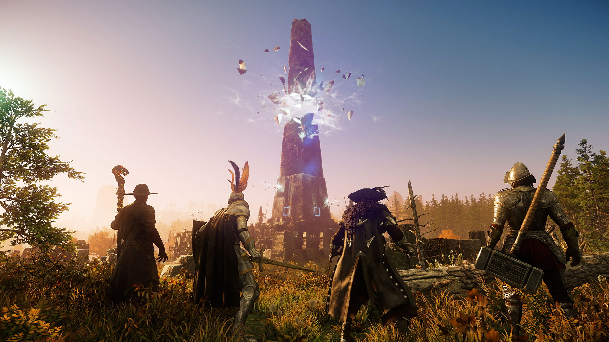

Starting Towns
When you are brought to the shores of Aeternum you will be spawned in one of the few starting zones in the game - First Light, Windsward, Monarch Bluffs or Everfall. It doesn’t really matter where you are spawned but in my opinion its best when you are spawned in Everfall or Windsward. The reason is that they are close to the zones that have the story quests and you don’t have to walk that much. Windsward at the beginning has most of the story quests at the beginning and even your first dungeon you are going to do in your adventure.
Level 1-25
When brought to the world of Aeternum is best to just start off with doing the quests you are given from the starting guy. While doing your first quests you can gather Flint so you can make your first gathering tools. When you finish all your quests at the starting location you would have to walk to your first settlement and on your road there you can gather food, iron, wood. Why this is good to do that is because when you arrive in the settlement you can check the “Quest Board” in the town and one of the quests might be to deliver an item like the ones you have collected and this way you can get more XP before starting the main story line.
When you arrive its best to start doing the main story line quests until you are given the possibility to choose your faction. When you choose the faction you would want to fight for its best to continue with your main quests until you talk to the Elder guy on the river, after that you can start doing board quests, quests for other NPCs and faction quests. You can easily level up almost 2 levels when getting everything you can and make a full circle of the map.
Level 25-60
When hitting 25 level you can start doing your main quests again and you will even do your first dungeon Amrine. The story gives a lot of XP and by doing them you will level up almost to level 32-35. After that you can continue doing factions, NPC and town boards until you hit level 40 and start doing the main story again. After that its pretty much doing the same thing over and over again, doing new dungeons and just explore the new zones you go to.

When Bored
If you feel bored doing the same things over and over again you can do other activities in the game. You can do activties like PVP, Wars, gathering and crafting. These all give XP in your adventure of leveling up so you wont feel behind if you do them when bored.